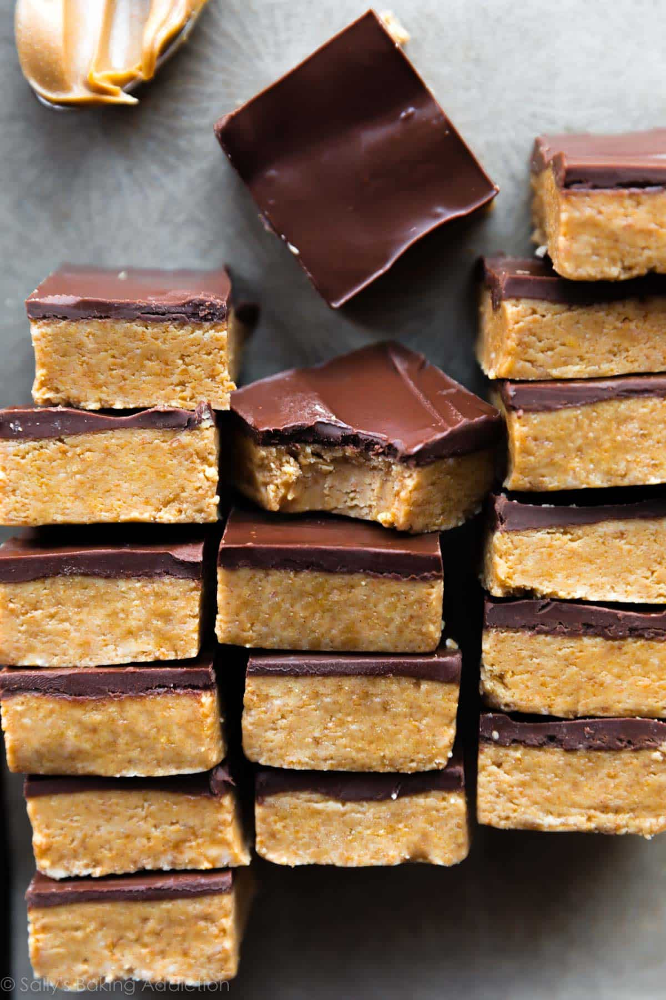

Chocolate Peanut Butter Bars

Description
It’s no secret that many bakers love baking with peanut butter. Like these peanut butter cookies, a recipe that has lived on my site for years and serves as the base for so many of our other peanut butter favorites like peanut butter blossoms. But what about NO BAKING with peanut butter? No bake chocolate peanut butter bars combine an alluring flavor combination that we all love: chocolate and peanut butter. In this easy dessert, velvety smooth chocolate sits on top of a thick layer of peanut buttery goodness. The peanut butter layer tastes remarkably similar to the center of a Reese’s Peanut Butter Cup.
The best part of all? They’re made from just 5 simple ingredients!
Ingredients
- Butter: Butter binds the powdered sugar and graham cracker crumbs. You can use salted or unsalted butter. If using unsalted, add 1/4 teaspoon salt when you add the peanut butter.
- Graham Cracker Crumbs: Graham cracker crumbs add structure and texture. You need about 8 full-sheet graham crackers for 1 cup of graham cracker crumbs. If desired, use gluten free graham crackers to make these a gluten free dessert recipe.
- Peanut Butter: Peanut butter is the main ingredient and it’s actually used in both layers. For best texture, I suggest a processed creamy peanut butter such as Skippy. (I do not recommend oily or natural style peanut butter for this recipe, though I do make homemade peanut butter all the time! If you are looking for a recipe to use natural style peanut butter, these peanut butter cookies are for you.)
- Powdered Sugar: Powdered sugar keeps everything together and adds sweetness.
- Chocolate Chips: Because we can’t have chocolate peanut butter bars without chocolate!
Steps
- Line an 8-inch or 9-inch square baking pan with aluminum foil or parchment paper. Set aside.
- Mix the melted butter, graham cracker crumbs, and confectioners’ sugar together in a medium bowl. Stir in 1 cup (250g) of peanut butter, then press evenly into prepared baking pan.
- Melt remaining 2 Tablespoons of peanut butter with the chocolate chips in the microwave or on the stove. Stir until smooth. Spread over peanut butter layer.
- Chill in the refrigerator until completely firm, at least 2 hours. Allow to sit at room temperature for 10 minutes before cutting. Serve chilled. Setting them out for a few hours at room temperature for serving is OK.
- Cover leftover bars tightly and refrigerate for up to 1 week.